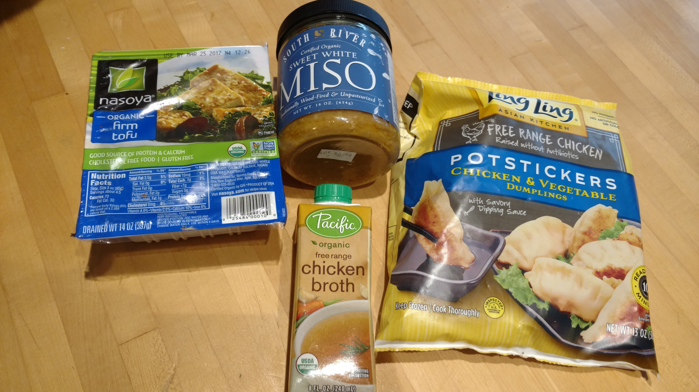
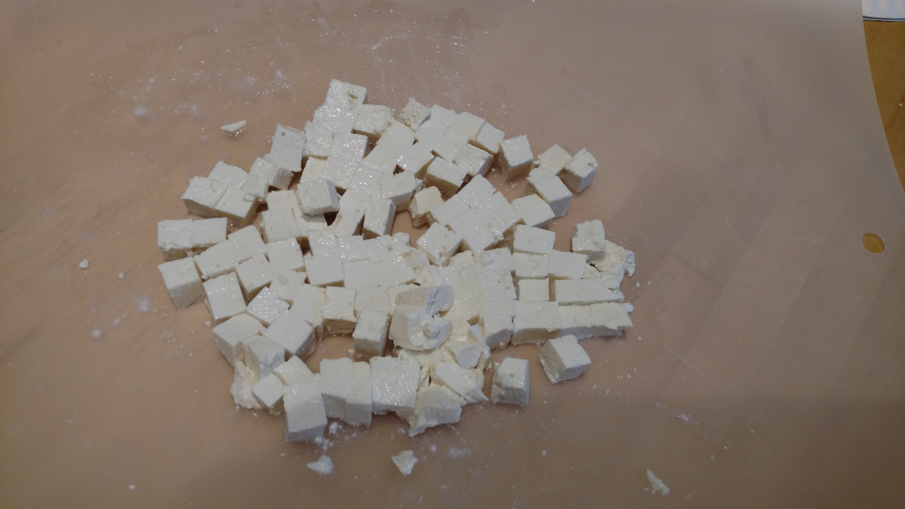
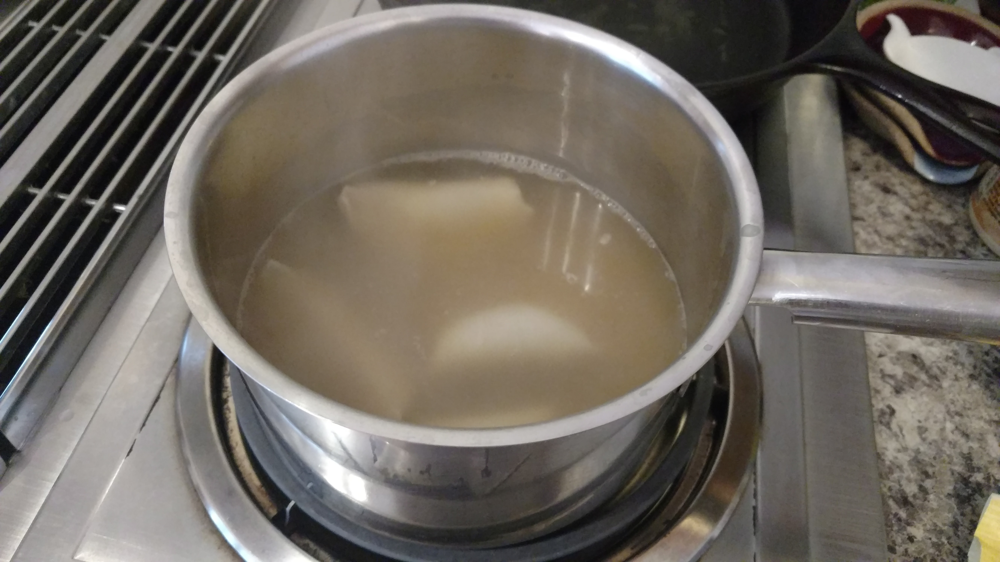

Now that we realize how important it is to have probiotics in our diets, we have to find some tasty food sources for them, and Miso soup is the perfect choice! Now miso soup is definitely nourishing on its own, but to make it a little more substantial I added in some potstickers
Another incredibly simple recipe. These ingredients are all it takes!
I cut up the tofu in little cubes like this, You can add as much or as little tofu as you'd like to this recipe. I used a substantial amount in the soup, but I also saved somr to make some grilled tofu for myself another night.
Once you've simmered the miso for a few minutes, you just have to heat the potstickers and tofu through, and that's it! Probiotics are so important for our gut flora, so miso soup is great for overall health!